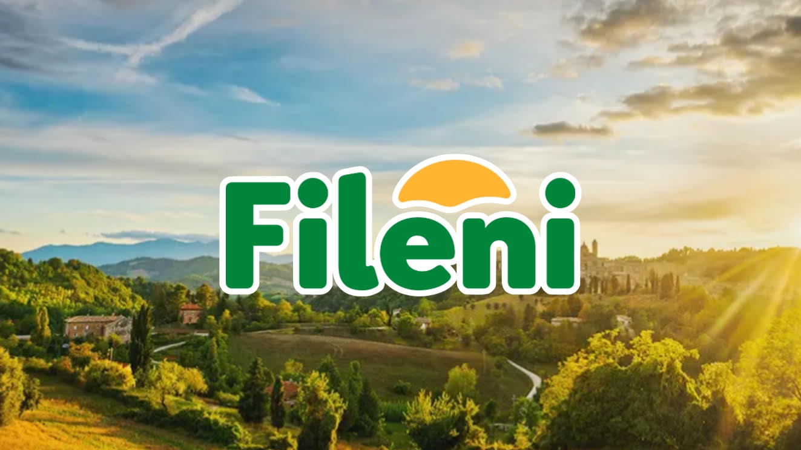
Coltivare il futuro, rispettare la terra, nutrire le comunità.
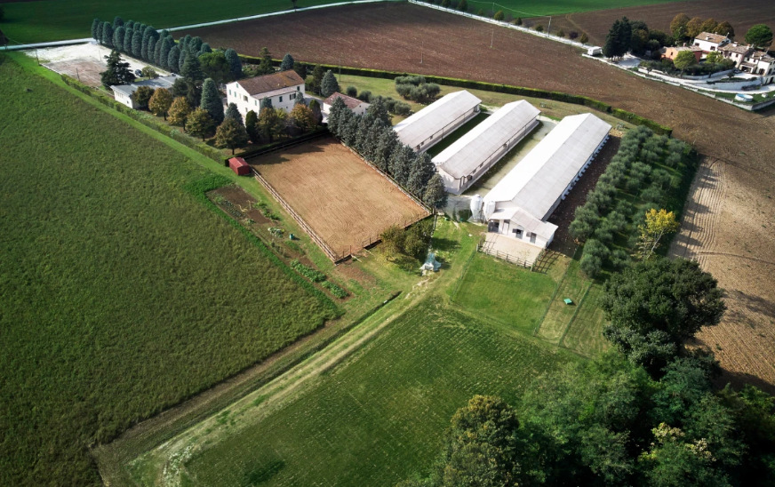
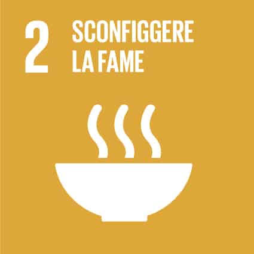
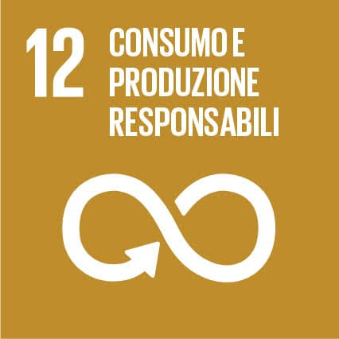
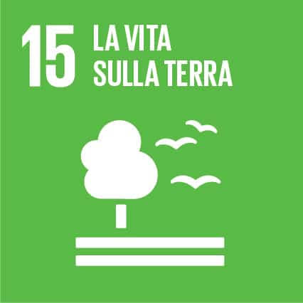
Coltivazione Diretta e Rigenerativa
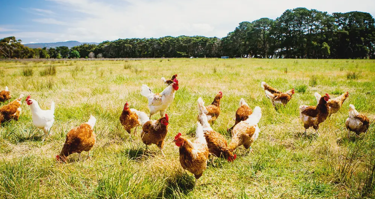
Allevamento all'Aperto e Rispettoso
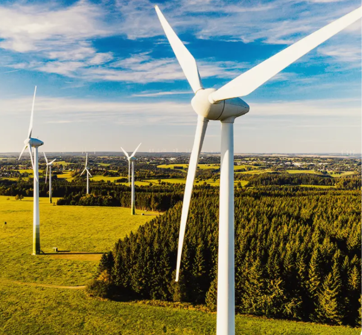
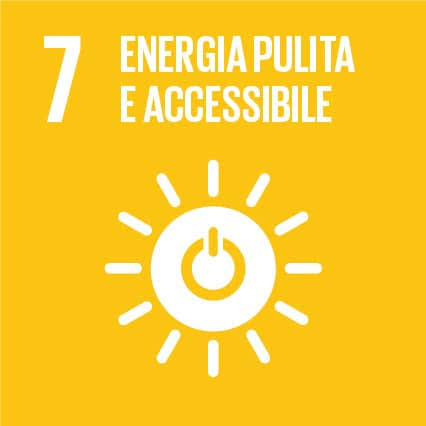
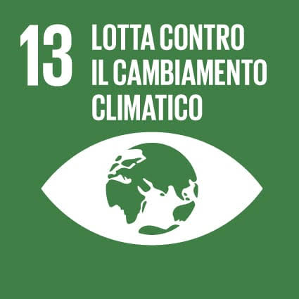
Gestione Efficiente di Energia e Materiali
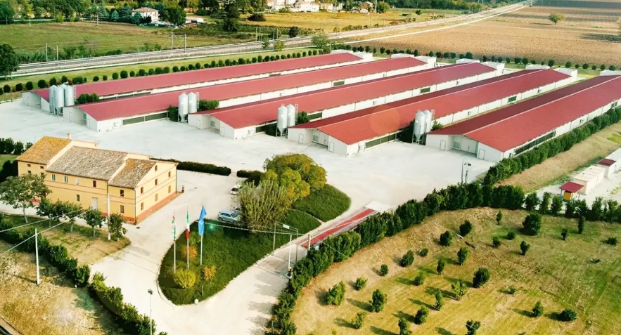
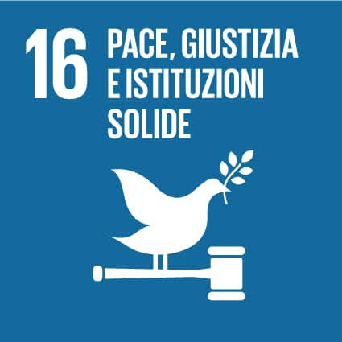
Conduzione Responsabile
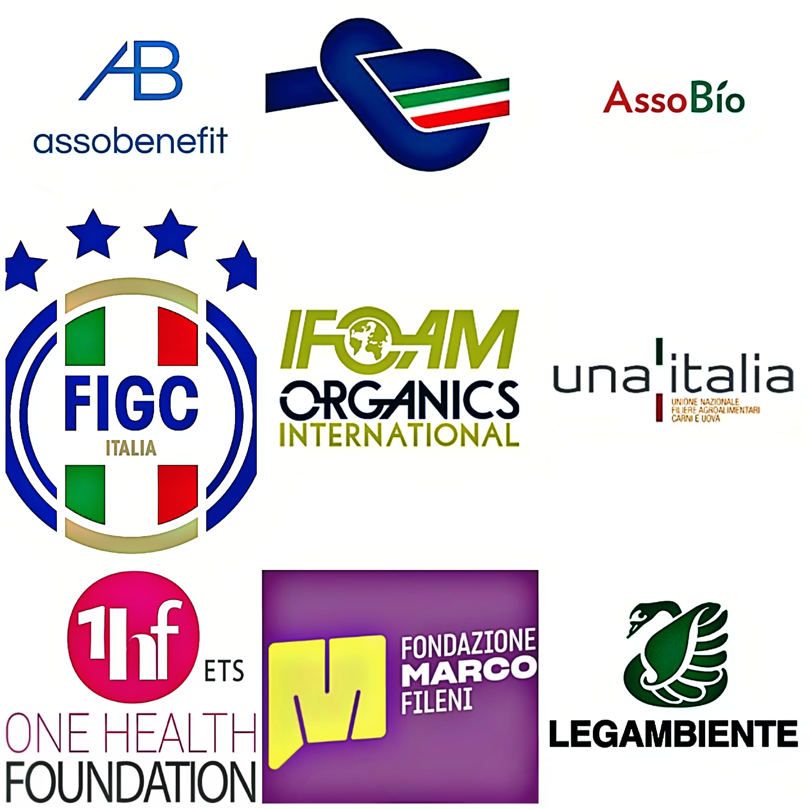
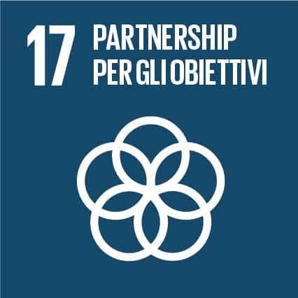
Sinergie Strategiche, Sportive e Sociali
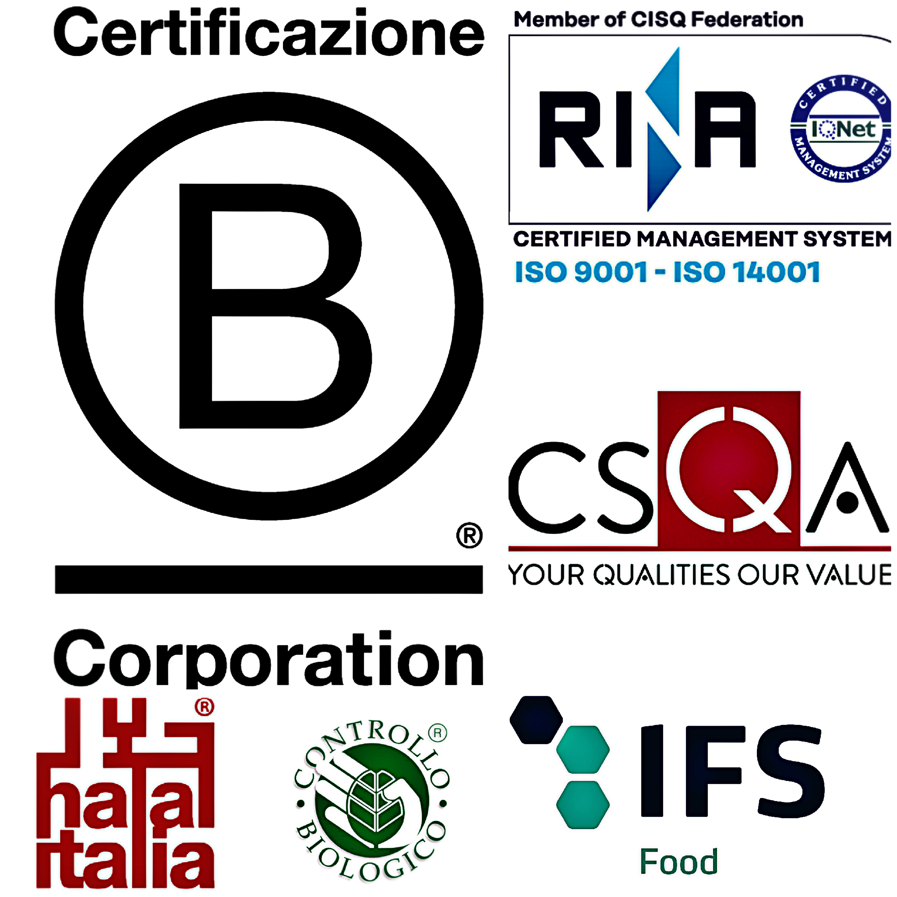
Standard Internazionali di Eccellenza
Scarica la documentazione ufficiale in formato PDF per approfondire tutti gli indici ESG, i dati di impatto ed i traguardi raggiunti dal Gruppo Fileni.
Scarica il Report di Sostenibilità (PDF)
SOCIAL
Persone, comunità locale, salute e inclusione sociale
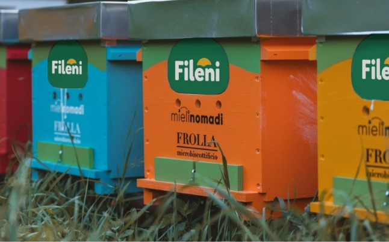
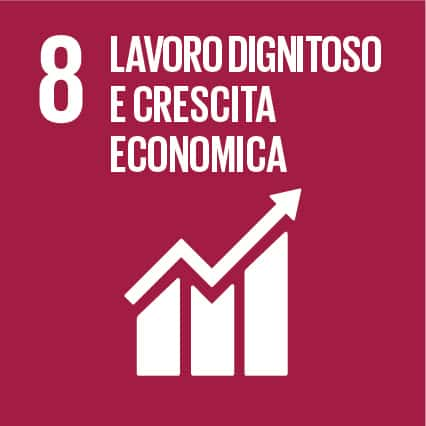
Valore per la Comunità
Impatto Positivo sul Territorio
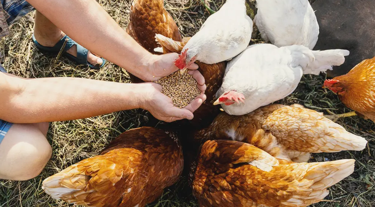
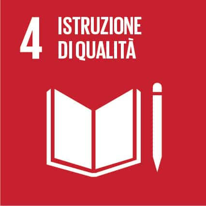
Salute e Sicurezza sul Lavoro
Tutela e Welfare Aziendale